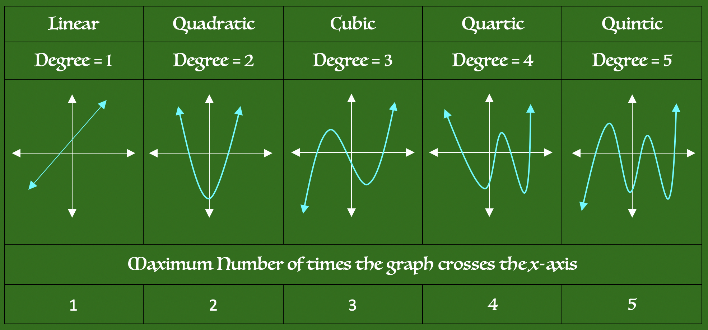
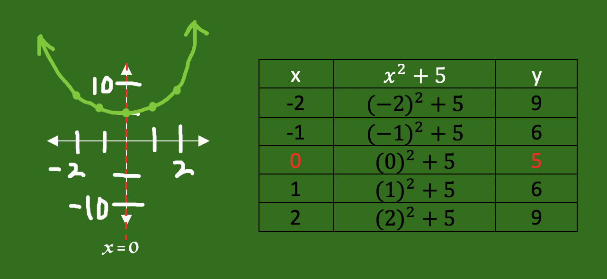
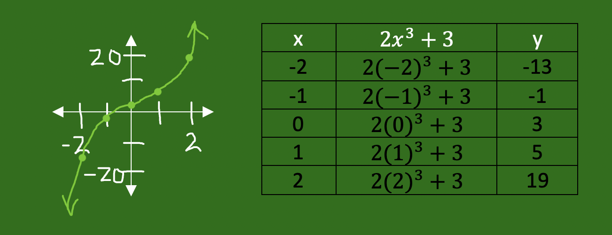

In this module we will learn how to classify a polynomial based upon its degree and number of terms.
"Poly" means many, and nomial means "terms". So a polynomial is an expression with many terms.
Polynomials are classified by the number of terms they have, and by their degrees. The degree of a polynomial is the largest exponent present. Names are given to each and are shown below. This information needs to be memorized.
Classification Based Upon Degrees
Focus on the largest exponent present
| Degree | Name | Example |
| n = 0 | constant | 4 |
| n = 1 | linear | 2x + 5 |
| n = 2 | quadratic | x2 + 3x + 2 |
| n = 3 | cubic | x3 + x2 + 2x + 4 |
| n = 4 | quartic | x4 + 2x3 + 3x2 + 4x + 6 |
| n = 5 | quintic | x5 + 3x4 + 2x3 + 4x2 + 5x + 2 |
Classification Based the Number of Terms
| Number of Terms | Name | Example |
| 1 | monomial | 5 |
| 2 | binomial | 2x2 + 4x |
| 3 | trinomial | x2 + 3x + 2 |
| 4 | quadrinomial | x3 + x2 + 2x + 4 |
| 5 | 5-term | x4 + 2x3 + 3x2 + 4x + 6 |
| 6 | 6-term | x5 + 3x4 + 2x3 + 4x2 + 5x + 2 |
Classify the polynomial based upon its degrees and number of terms.
1. x4 + 3x + 2
Solution: The largest exponent is a 4, so this expression is called "Quartic".
It has 3 terms and is called a "trinomial".
2. 5x - 3
Solution: The largest exponent is 1 because "x" = "x1". It is called "linear".
The expression has 2 terms so it is called a "binomial".
Knowing the degree of a polynomial will help you predict the shape of its graph. All graphs that share the same degree will have the same shape.
 As you can see, a polynomial's degree tells you the maximum number of times its graph can cross the x-axis. This will assist us when graphing the polynomial.
Graph the polynomial f(x) = x2 + 5.
This function is degree 2 and will have a "U"-shaped graph.
Use a table of values to help you.
Step 1: Use the formula x = (-b ÷ 2・a) to locate the vertex of the Parabola:
f(x) = x2 + 0x + 5
a = 1, b = 0, c = 5
x = -0 ÷ 2・1
x = 0
The vertex lies along the line x = 0. Place zero in the middle of the Table, and choose two points on either side of the vertex to create its graph.

Graph the polynomial f(x) = 2x3 + 3
This function is degree 3 and will have an "S"-shaped graph.
Use a Table of values to help you.

The number of terms a polynomial has is used to name the polynomial, but the degree of the polynomial is the most important part because it will describe the shape of the polynomial's graph.
Now you try:
Classify the polynomial by its Degree:
3x4 + 2x2 + 6
Now you try:
Classify the polynomial by its Degree:
3x2 + 2x + 6
Now you try:
Classify the polynomial by its number of terms:
x2 + 2x + 6
Now you try:
Classify the polynomial by its number of terms:
3x + 12